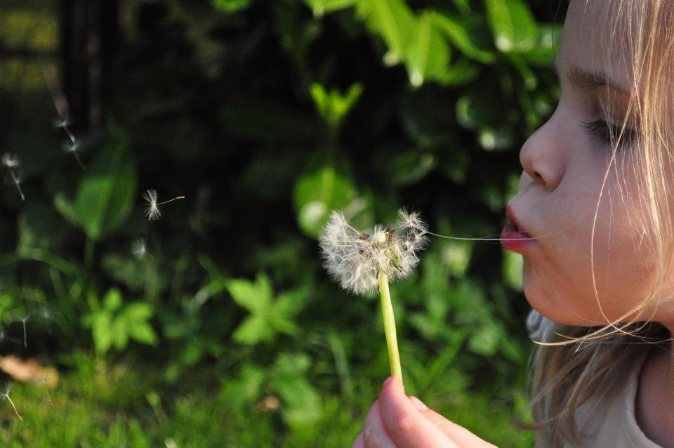

Moments of Wonder
The little words to say when the world does something beautiful.
A child sees the first star of the evening, says four lines that every generation before them has said, makes a wish, and the night is marked. That is the whole idea. The moments are all still happening — the swallows still come back in April, the dandelion clocks still blow, the moon is still new once a month — but the words that went with them have mostly stopped being handed on. Here they are, gathered back up.
How to use this
Don't try to do them. Read a few, keep three or four in your head, and wait for the world to hand you the moment. The whole value is that you say it when it happens — the first star, the first snow, the butterfly on the wrist. Say the same words every time and say them out loud, even when you feel daft. Especially then.
Some of these are hundreds of years old and some we wrote, and every one says which it is. Nothing here needs anything bought, booked or charged.
A child arrives with a great deal of language for what is wrong and almost none for what is wonderful. That is not their fault — the complaining words get used every day and the marvelling ones have gone quiet. Handing a child a set of words for beauty does two things at once: it gives them somewhere to put the feeling, and it tells them, without a lecture, that this sort of thing is worth stopping for. What they remember decades later is almost never the sight. It is that somebody stopped.
Out there right now
The ones we left out, and why
A lot of the old sayings have a nasty tail on them. Ladybird, ladybird, fly away home — your house is on fire and your children are gone. One for sorrow. Rain, rain, go away. Charming tunes carrying curses, dread and a running argument with the weather, and a small child chanting them takes the meaning in whole.
So none of them are here. Where the ritual underneath was worth keeping — letting a ladybird walk to your fingertip and fly — we wrote new words and said plainly that we wrote them. Where there was nothing worth saving, it is simply gone. What a child says out loud every week becomes part of how they expect the world to behave, and that is far too valuable to hand over to a rhyme nobody has read properly since 1840.
Rhymes & songs This week's feast Days out Things to do together